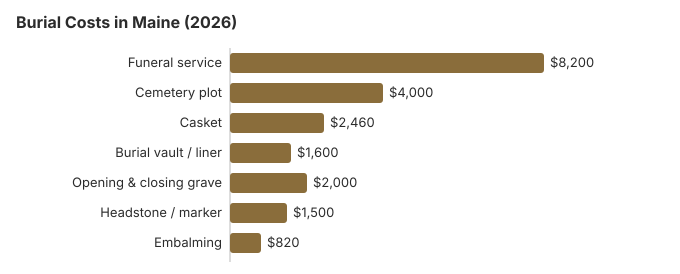

Burial Costs in Maine (2026)
A Maine burial in 2026 comes to roughly $18,760 to $23,260 once the cemetery's charges are counted. About $8,200 of that is the funeral home's service and around $4,000 is the plot; the rest is the casket, vault, grave opening and a headstone. The sections below price each item, explain Maine's general assistance limits and the veterans cemeteries, and note what winter can do to the timing.
Maine Burial Prices, Item by Item
| Part of the burial | Maine estimate | Usual range |
|---|---|---|
| Funeral service | $8,200 | $6,150 – $10,660 |
| Cemetery plot | $4,000 | $2,000 – $8,000 |
| Casket | $2,460 | $820 – $6,560 |
| Burial vault / liner | $1,600 | $800 – $10,000 |
| Opening & closing grave | $2,000 | $500 – $3,000 |
| Headstone / marker | $1,500 | $500 – $5,000+ |
| Embalming | $820 | $500 – $1,500 |
How we arrived at the Maine numbers: they come from our price model, not from calling Maine funeral homes or cemeteries, so treat them as a starting point rather than a quote or professional advice. Read our method for the details, and see the disclaimer.

With the cemetery's fees included, Maine burials generally land between $18,760 and $23,260, and the family's choices set the final figure.
Town and Church Cemeteries in Maine
Many Maine towns own a cemetery, and churches and cemetery associations run many more. Their plots are often priced to cover upkeep rather than profit, so ask the town office and any church the family belongs to before settling on a commercial memorial park.
Burial Resources
- Funeral Consumers AllianceNonprofit consumer advocacy for funeral pricing
- Headstone & Monument GuideCosts, types, and buying tips
- Green Burial OptionsEco-friendly and natural alternatives
- Best Online Casket RetailersCaskets bought online often cost less
- Best Burial InsuranceCompare plans to cover burial expenses
Compare Funeral Costs
- Average Funeral Cost in 2026National cost breakdown with real prices
- Cremation vs. Burial Cost ComparisonSide-by-side price comparison to help you decide
- Funeral Cost BreakdownEvery line item explained: know what you're paying for
- Cheapest Funeral OptionsLower-cost alternatives, with typical price ranges
- Direct Cremation: Most Affordable OptionNFDA 2023 median $2,645 with a family-supplied container (latest available)
- How to Compare Funeral PricesStep-by-step guide to getting the best price
Other Burial Choices in Maine
Keeping a Maine Burial Affordable
Steps that tend to lower the bill in Maine:
- Get prices item by item. Every Maine funeral home must hand you its General Price List. Cemeteries have no such duty, but most will give you a written price sheet if you ask for individual charges instead of a package.
- Ask about winter before you sign. Some Maine cemeteries charge extra to open frozen ground, and others hold the body in a receiving vault until spring, so find out which applies and what it costs.
- Call the town office. Town-owned and church cemeteries are common across Maine and are a good place to start pricing a plot.
- Look a little further out. Plots close to Portland usually cost more than those in smaller towns a short drive away, and the family can still visit easily.
Frequently Asked Questions
What does a burial cost in Maine?
Our estimate for a Maine burial is $18,760 to $23,260. The funeral service is about $8,200 and the plot about $4,000; a casket adds around $2,460, a vault $1,600, opening and closing $2,000, and a headstone $500-$5,000.
Do Maine cemeteries require a vault?
No Maine law makes a vault mandatory, but most Maine cemeteries ask for one, or for a cheaper liner, so the ground does not sink. Vaults run from about $800 to $10,000, so ask in writing which container the cemetery accepts before you buy one.
Who decides on a burial in Maine, and how can costs come down?
Maine sets out who decides on a burial in 22 M.R.S. §2843-A. Custody follows a fixed order: spouse, then domestic partner, then an adult child, then a parent and onward. An estranged spouse or partner loses that right, and if the person entitled to decide does not act within 4 days, custody passes to the next level. When no decision is made within 30 days, the funeral director may bury the body at their own expense, and remains abandoned for 15 days may be buried, cremated or reduced by natural organic reduction. Direct burial without embalming or a ceremony usually remains the cheapest burial line, and a VA national cemetery burial is free for eligible Maine veterans.
How should I compare cemeteries in Maine?
Ask each Maine cemetery for a written list covering the plot, opening and closing, and its container rules. The FTC Funeral Rule applies to funeral homes, not to most cemeteries, so a cemetery may not have to itemize, but asking costs nothing. For veterans, Acadia National Cemetery is the VA national cemetery serving Maine.
What else gets added to a Maine burial bill?
On top of the $18,760 to $23,260 estimate, expect cash advance items: certified copies of the death certificate, an obituary notice and flowers, which the funeral home pays on your behalf and passes on at cost.
Is green burial possible in Maine?
Some Maine cemeteries set aside green burial sections, where the body goes into a biodegradable container with no embalming and no vault. Total costs usually come in below a conventional burial. Where no green ground is close, a family can choose an ordinary plot and decline embalming.
More for Maine
Who signs Maine's disposition permit at the grave
Maine will not let a body be buried until a funeral director or other authorized person holds a permit for disposition, usually issued by the municipal clerk. After the burial, the person in charge of the burying ground, often a sexton, writes the date of burial on the permit, endorses it and returns it within 7 days to the State Registrar or to the clerk of the town where the cemetery sits. If a small or family burying ground has no one in charge, a town official does the endorsing instead (22 M.R.S. § 2843; checked October 29, 2026).
The funeral director or family member handling the burial also owes endorsed copies to the clerk of the town where the death happened and to the clerk who issued the permit. Since March 2020, the state's clerk training says every town must attach endorsed permits in the electronic death registration system, which makes them easy to find later if a grave location is ever in question.
Maine's board, general assistance and veterans cemeteries
The Maine Board of Funeral Service (207-624-8624) licenses the funeral homes that arrange burials. A cemetery may answer to someone else, so ask the board which office covers the one you are considering.
Maine is not one of the nine states the Funeral Consumers Alliance lists as requiring a funeral director, which means a family can arrange a burial itself. The burial permit is still needed, and the cemetery's own rules on the grave still apply.
Once the permit is issued, a Maine burial can go ahead. Cremation is different: it has to wait 48 hours (32 M.R.S. § 1405).
Help with the cost
Through general assistance, a Maine town can pay up to $1,620 toward a burial. The administrator may add the actual cost of a liner the cemetery requires, opening the grave, and a lot in the cheapest section (22 M.R.S. § 4313). (Source: 22 M.R.S. § 4313; Maine GA Appendix H (10/1/26–9/30/27).) If the town has its own cemetery, ask about a lot there first, because the program will not pay for a lot elsewhere. A qualifying spouse or child can also claim Social Security's $255 death payment within two years; it goes to them, not to the cemetery.
Veterans
A veteran who qualifies is buried in a national cemetery with the grave, opening and closing, liner and headstone provided free. Acadia National Cemetery (508-563-7113) is the VA national cemetery in Maine. The state runs Central Maine Veterans Cemetery (207-287-3481), Northern Maine Veterans Cemetery (207-492-0577) and Southern Maine Veterans Cemetery (207-490-4612), and the Houlton Band of Maliseet Indians operates a tribal veterans cemetery (207-532-4273) (source: VA National Cemetery Administration).
Before you commit in Maine
- Ask the cemetery for its own price sheet, since the plot, grave opening, liner and marker are usually billed apart from the funeral home.
- Check the cemetery's rules on winter burials, containers and markers.
- If general assistance may help, ask the town about a municipal lot before buying one anywhere else.
- For a veteran, find the DD214 discharge record and call Acadia National Cemetery about eligibility.
- If a funeral home misstates its burial prices, tell the board at 207-624-8624.